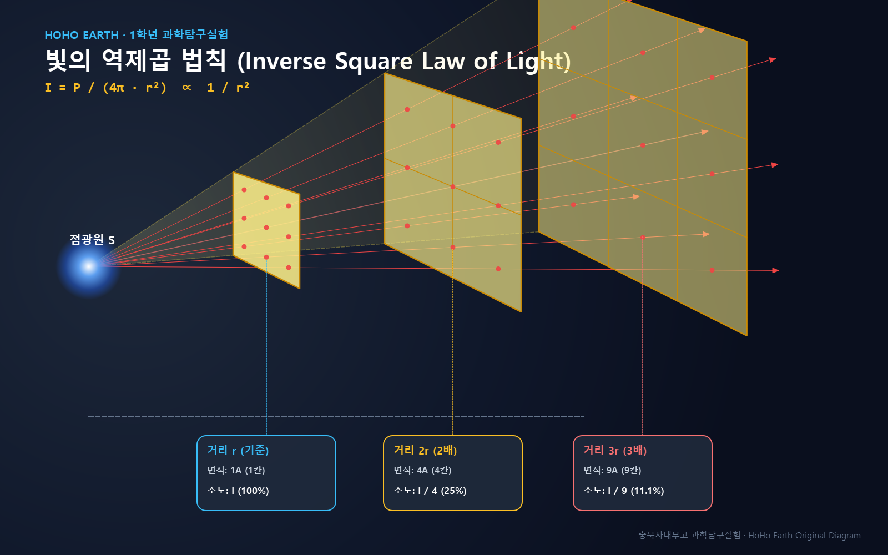

빛의 역제곱 법칙
Inverse Square Law of Light Experiment
점광원에서 방출된 빛이 공간으로 퍼져나갈 때, 광원과의 거리($r$)가 멀어짐에 따라 입사하는 빛의 세기(조도 $I$, Lux)가 거리의 제곱에 반비례($I \propto 1/r^2$)하여 급격히 감소하는 물리적 메커니즘을 정밀 광학 레일과 디지털 조도계를 이용해 직접 측정하고 통계적으로 검증합니다.
구의 표면적 공식($A = 4\pi r^2$)과 에너지 보존 법칙을 통해 거리가 2배, 3배 될 때 조도가 $1/4$, $1/9$로 감소함을 이해한다.
광원 전압을 일정하게 통제하고 암실 환경에서 주변 반사광을 차단한 후 10~50cm 거리별 조도를 3회 반복 측정한다.
실험 데이터를 입력하면 $I$ vs $r$ 반비례 곡선과 $I$ vs $1/r^2$ 선형 추세선($y=ax+b, R^2$)이 즉시 자동 생성된다.
실험 방법 및 오차 방지 유의사항
슬라이드의 핵심 내용 중 실제 실험실에서 지켜야 할 장비 세팅 방법, 변수 통제, 오차 방지 수칙만 체계적으로 재구성했습니다.
• 점광원과 구면 전파: 점광원(Point Source)에서 사방으로 균일하게 방출되는 빛의 총 에너지(광속 $P$)는 거리가 $r$만큼 떨어진 지점에서 반지름이 $r$인 구면 전체($A = 4\pi r^2$)로 퍼져나갑니다.
• 수학적 정의: 단위 면적당 입사하는 빛의 세기(조도 $I$, 단위: Lux)는 다음과 같이 표현됩니다:
* 따라서 거리가 2배(20cm)가 되면 조도는 기준(10cm)의 1/4 (25%), 거리가 3배(30cm)가 되면 1/9 (11.1%), 4배(40cm)가 되면 1/16 (6.3%)로 급격히 감소합니다.

💡 기하학적 구면 전파 모델: 동일한 광속 에너지가 거리 \(r, 2r, 3r\)에서 각각 \(1A, 4A, 9A\)의 구면적으로 분산되어 조도는 \(1, 1/4, 1/9\)로 감소합니다.
광학대 장치 세팅
광학 레일의 한쪽 끝에 LED 광원을 고정하고, 조도계 센서의 수진면이 광원 정면을 향하도록 수평 정렬합니다.
암실 조성 & 영점 보정
차광 패브릭을 덮어 암실 환경을 만들고, LED를 끈 상태에서 주변 잔여광(Background Lux)을 측정하여 0점 보정합니다.
거리별 3회 반복 측정
거리를 10cm, 20cm, 30cm, 40cm, 50cm로 이동하며 각 거리에서 조도(Lux)를 3회씩 측정하여 기록합니다.
평균 산출 & 그래프 분석
평균 조도를 산출하고, 아래 자동 그래프 도구를 통해 \(I\) vs \(r\) 및 \(I\) vs \(1/r^2\) 관계를 분석합니다.
과학탐구실험 수행평가 보고서
| 거리 \(r\) (cm) | \(1/r^2\) (\(\text{cm}^{-2}\)) | 1차 조도 (Lux) | 2차 조도 (Lux) | 3차 조도 (Lux) | 평균 조도 \(I\) (Lux) | 상대 조도 (%) |
|---|---|---|---|---|---|---|
| 10 cm | 0.0100 (1.00) | - | 100.0% | |||
| 20 cm | 0.0025 (0.25) | - | - | |||
| 30 cm | 0.0011 (0.11) | - | - | |||
| 40 cm | 0.0006 (0.06) | - | - | |||
| 50 cm | 0.0004 (0.04) | - | - |